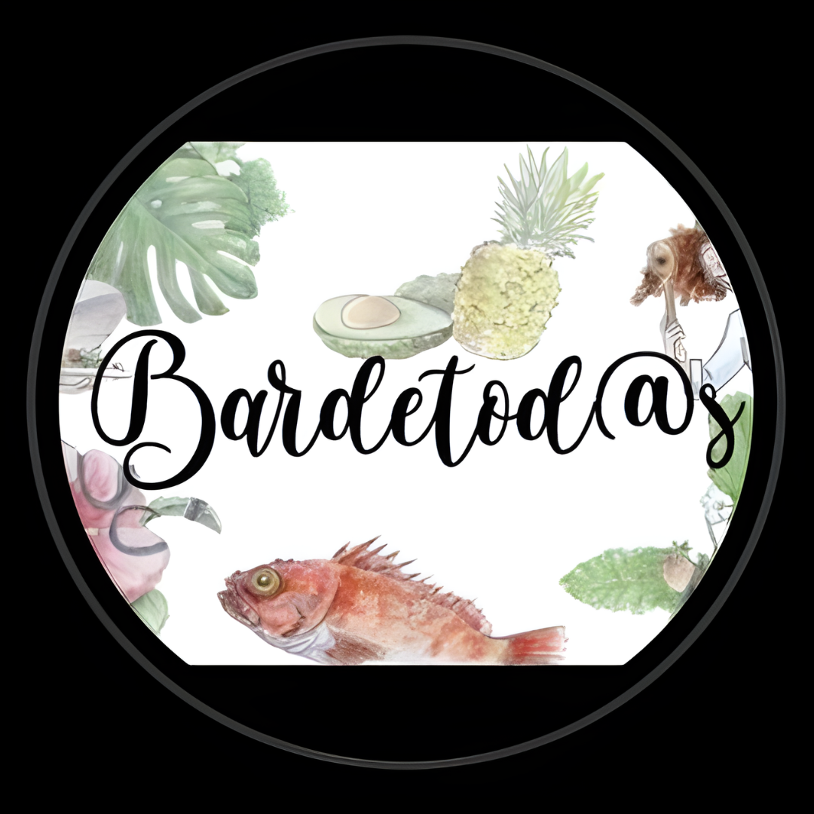

Generador QR con Logo
Genera un QR local en el navegador y agrega un logo en el centro.

Vista previa
Si cargas un logo, el QR se vuelve más personal. El logo se coloca en el centro con borde blanco para mejor lectura.
Genera un QR local en el navegador y agrega un logo en el centro.

Si cargas un logo, el QR se vuelve más personal. El logo se coloca en el centro con borde blanco para mejor lectura.